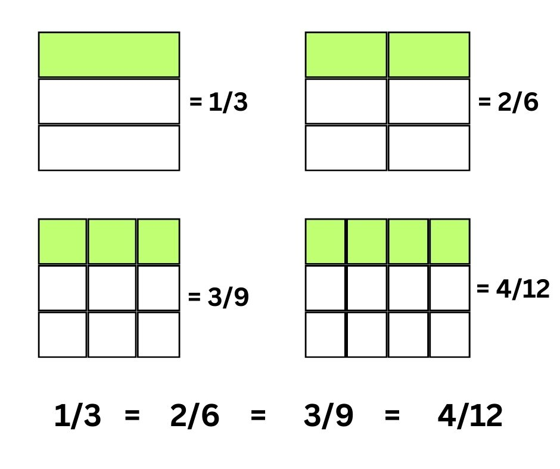
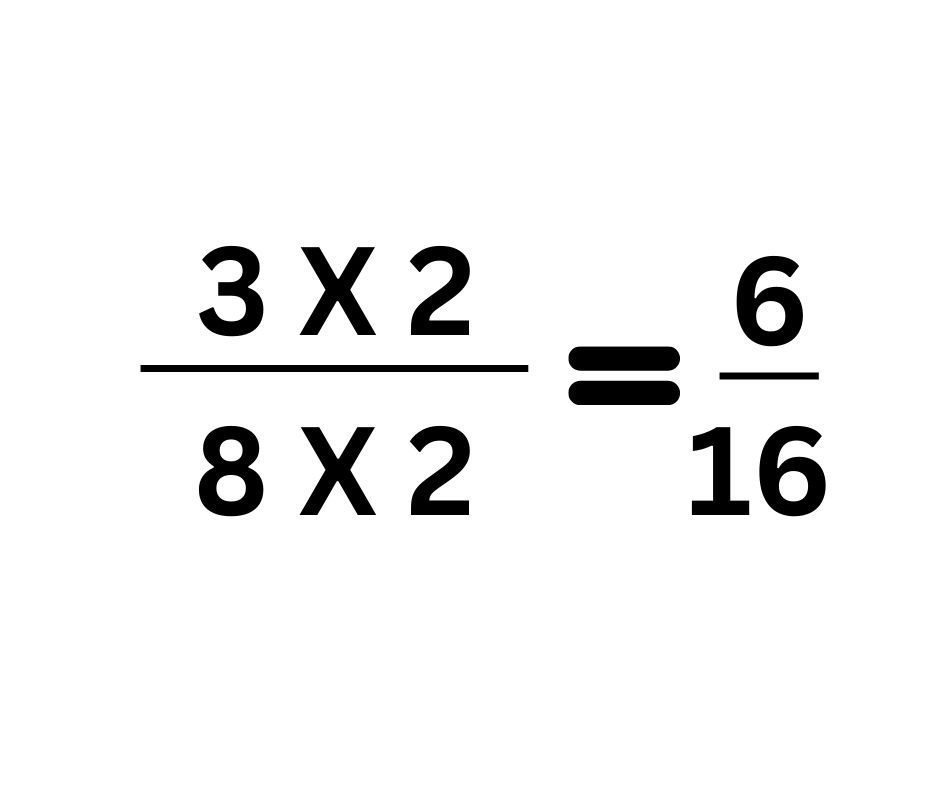
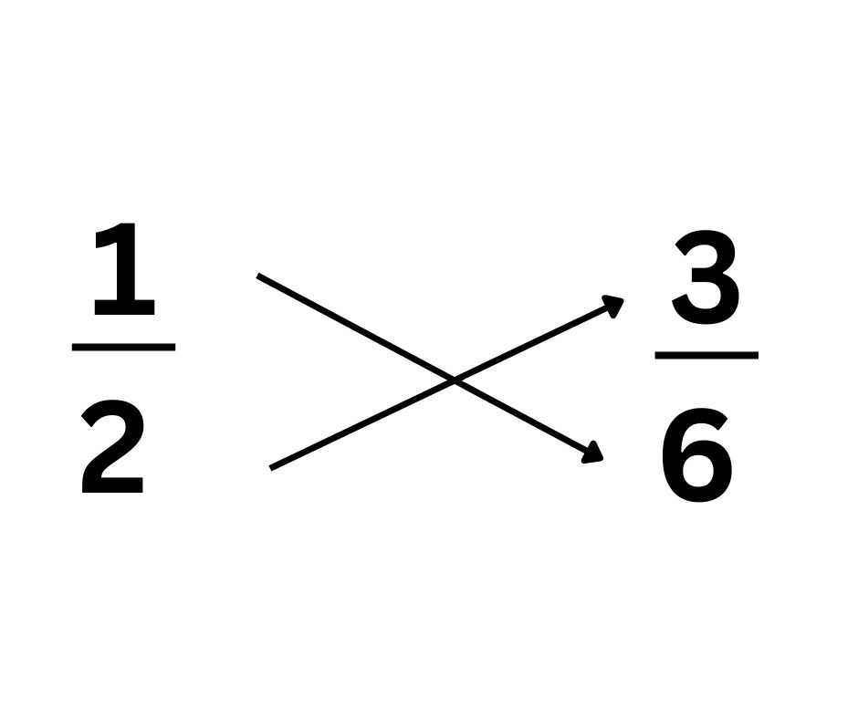

Comparing Like fractions :
For comparing fractions with the same denominators, it becomes easier to determine the greater or the smaller fraction.
After checking if the denominators are the same, we can simply look for the fraction with the bigger numerator.
If both the numerators and the denominators are equal, the fractions are also equal.
For example, let us compare 6/17 and 16/17
- Step 1: Observe the denominators of the given fractions: 6/17 and 16/17 . The denominators are the same.
- Step 2:Since the denominators are the same, compare the numerators. The fraction with the larger numerator is the larger fraction.
Comparing fraction with same numerator:
If two fractions have the same numerator but different denominators, the fraction with the larger denominator is the smaller fraction, and the fraction with the smaller denominator is the larger fraction.
For example: if we want to compare 2/3 and 2/5 , both fractions have same numerator 2, but different denominator (3 and 5)
3 is smaller than 5.
Therefore, 2/3 >2/5
Steps to Compare Fractions with Like Numerators
To compare fractions with like numerators, we may use the following steps:
- Step 1: Compare denominators.
- Step 2: The fraction with a larger denominator is smaller.
Ascending and descending order of Fractions:
Ascending order: It means arranging fractions in increasing order from smallest to largest. For example: we have to arrange these given fractions in ascending order: 2/3, 2/9, 2/8, 2/5
Answer = 2/9, 2/8, 2/5, 2/3
Descending order: It means arranging fractions in decreasing order from largest to smallest. For example: we have to arrange these given fractions in descending order: 2/3, 2/9, 2/8, 2/5
Answer = 2/3, 2/5, 2/8, 2/9
Equivalent fractions: The fractions that represent the same value but look different (i.e different numerators or denominators) are called equivalent fractions. In other words, two or more fractions are said to be equivalent fractions if they are equal to the same fraction after we simplify them.  In the above image, 1/3, 2/6, 3/9 and 4/12 seem to be different but they are equivalent fractions as on simplification, we get the fraction ⅓
Finding an Equivalent Fraction
To find equivalent fractions, we multiply the numerator and the denominator by the same number.
For example: We have to find two equivalent fractions for 3/8.
For example: We have to find two equivalent fractions for 3/8.
Multiplying the numerator and denominator by 2.

Multiplying the numerator and denominator by 3.
The two equivalent fractions for 3/8 are 6/16 and 9/24.
How to check two fractions are equivalent
Given, two fractions 1/2 and 3/6
Cross multiply both the fractions to get:

1 x 6 = 6
2 x 3 = 6
Since, both the values are equal, therefore, 1/2 and 3/6 are equivalent fractions.